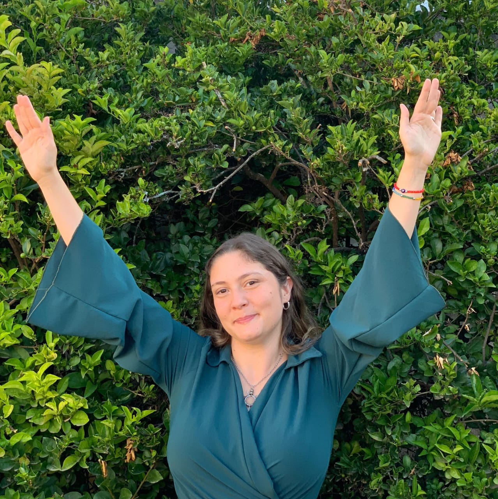
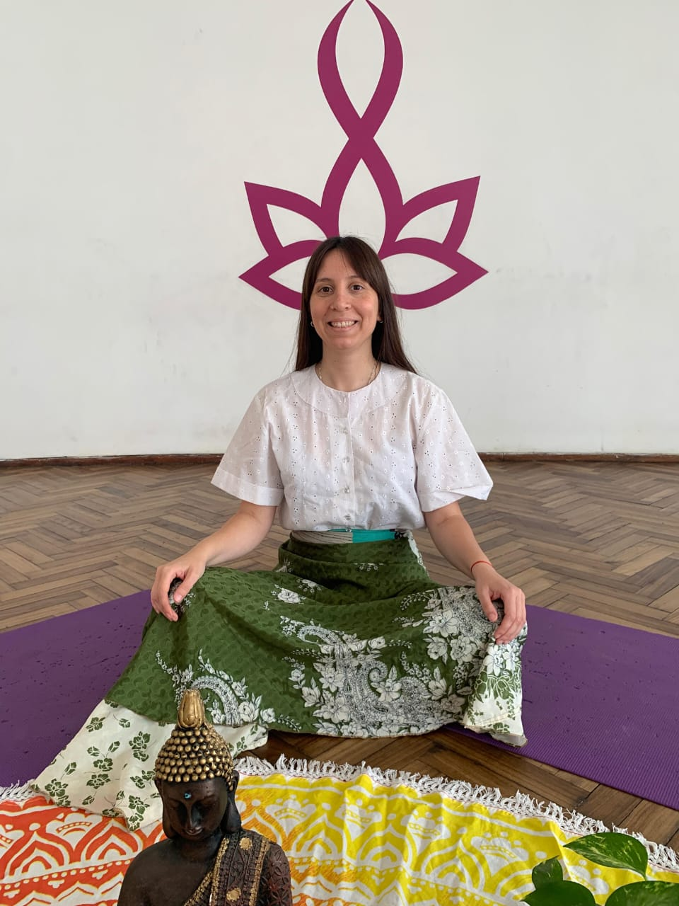

Terapeuta holística & mentora
Acompaño procesos de transformación con una mirada integral del ser: alma, cuerpo, mente, emociones y contexto.
En sesiones y talleres integro lo espiritual con prácticas concretas para que avances hacia la vida que querés. Trabajo desde Córdoba Capital y también en formato online.
Mi propósito: acompañarte a reconectar con tu magia para que crezcan la fuerza, el amor y la armonía que habitan en vos.

Consteladora familiar & Terapeuta holística
Te acompaño a ordenar vínculos, liberar bloqueos y recuperar claridad y paz a través de Constelaciones y Terapia de Alquimia.
Trabajo en Córdoba Capital y online. Integro herramientas energéticas y sistémicas para que la energía vuelva a fluir en armonía.
Mi propósito: acompañarte a reconectar con tu alma para encontrar fuerza, claridad y paz en tu camino.

Creemos en un ser integral que es parte del todo: alma, biología, mente, emociones y contexto. Con el acompañamiento de la Madre Tierra, guías, ángeles y maestros, podemos reconectarnos y renacer hacia la vida que merecemos.
Gracias por caminar este viaje de luz junto a nosotras.